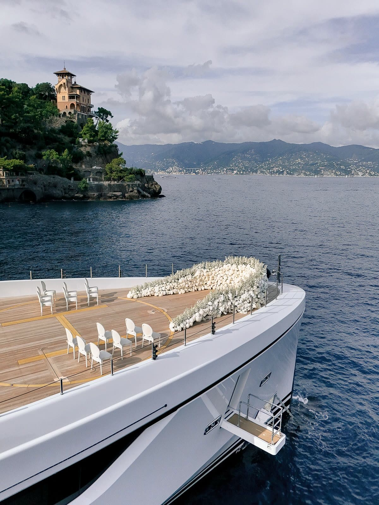
Celebration · Amalfi Coast
Russell & Nina Westbrook
— The Story
Some love stories deserve a sequel ... and Positano wrote this one in gold and sea-blue.
When Russell and Nina Westbrook chose the Amalfi Coast to celebrate their wedding anniversary, the brief was simple: all the emotion of a wedding day, none of the script. A family, their closest people, and a cliffside village that photographs like a film set from every angle.
Anniversary films are a different craft. There is no ceremony structure to lean on ... just an atmosphere that has to be caught rather than staged. With Mindy Weiss orchestrating the celebration, we brought pure documentary cinematography elevated with the fashion-film language of our weddings, alongside the beautiful stills of Greg Finck.
To Russell and Nina: thank you for letting our cameras into a celebration that belonged entirely to you.
— Positano
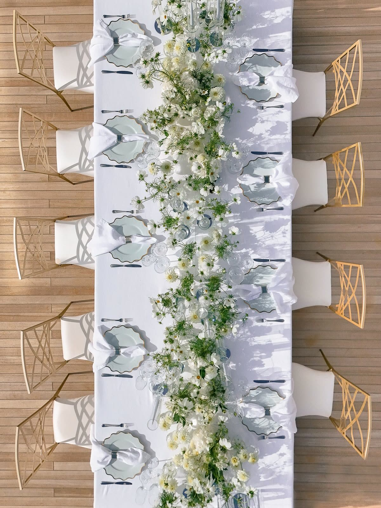
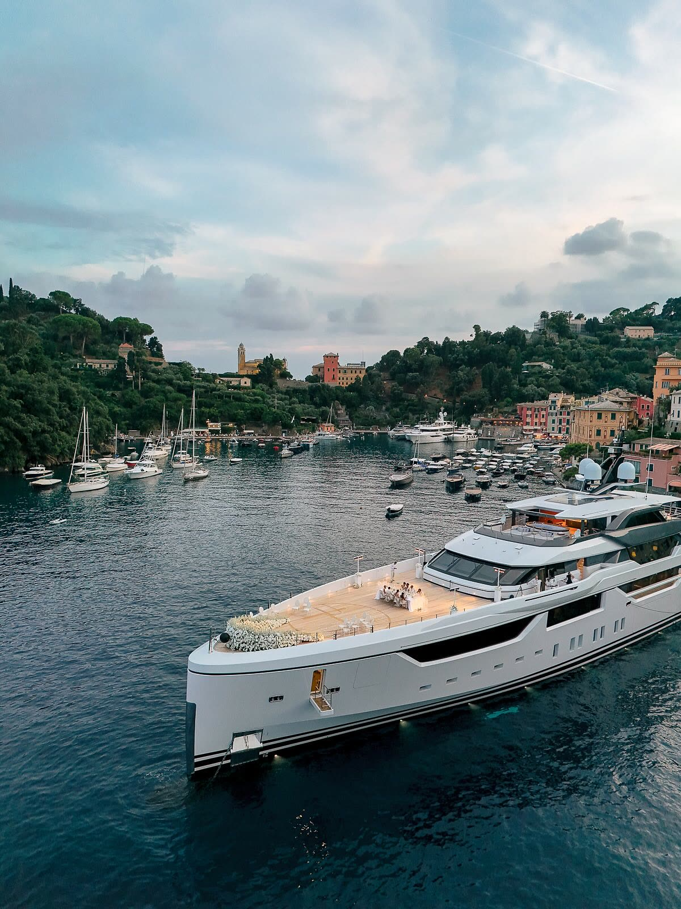
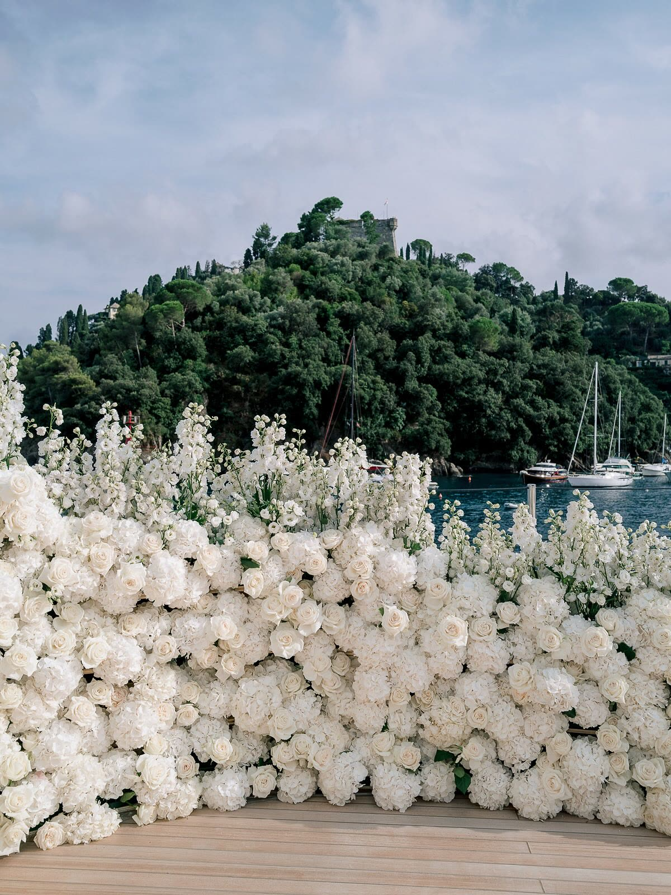
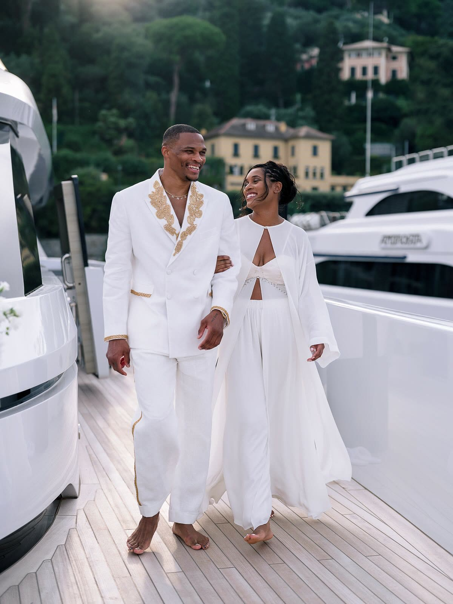
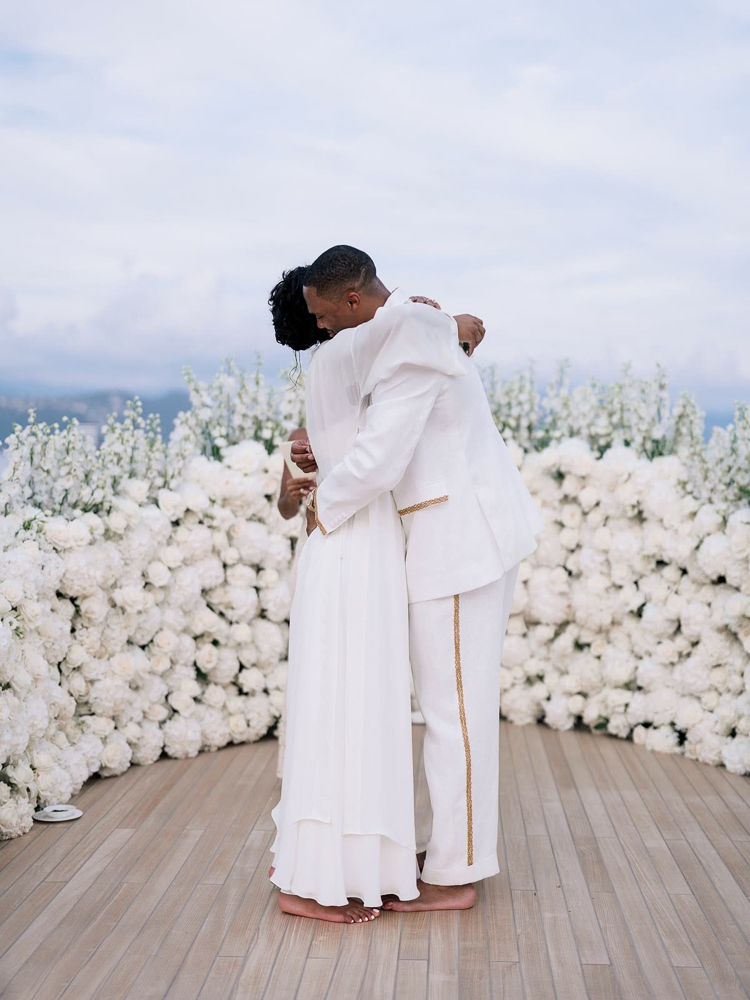
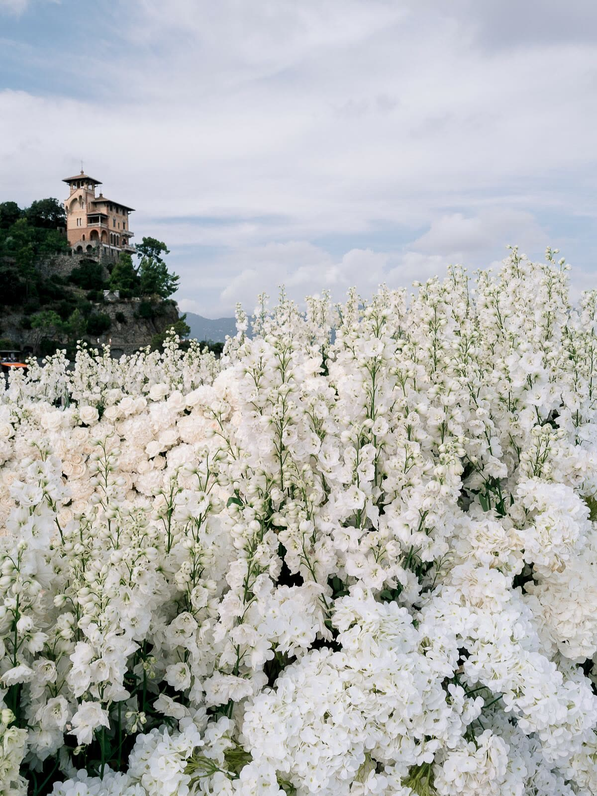
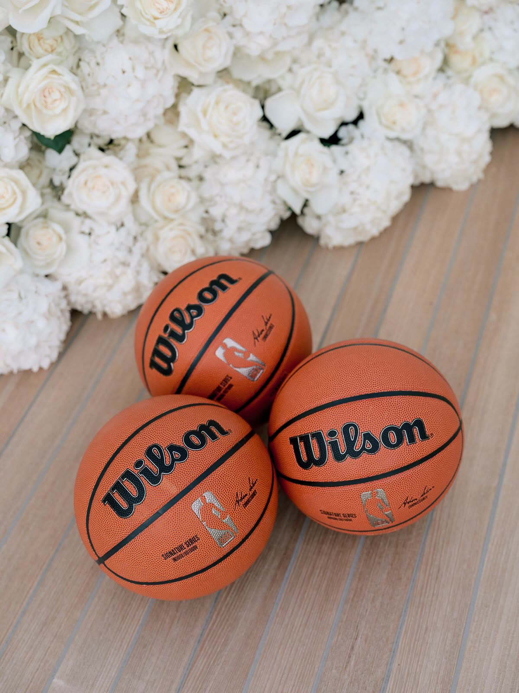

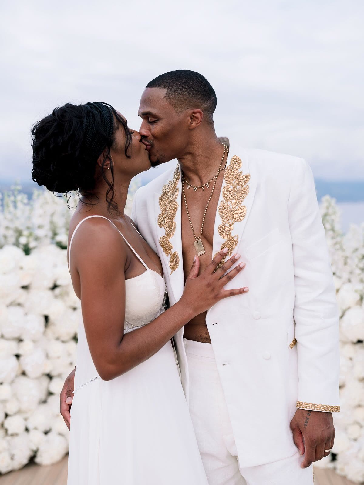
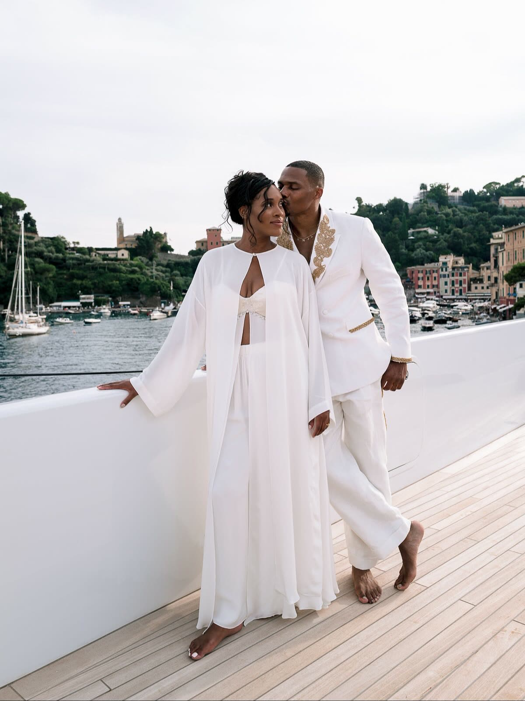
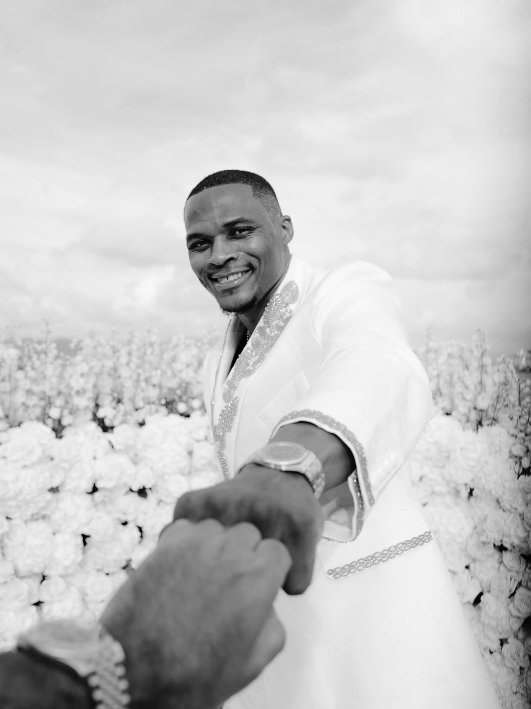
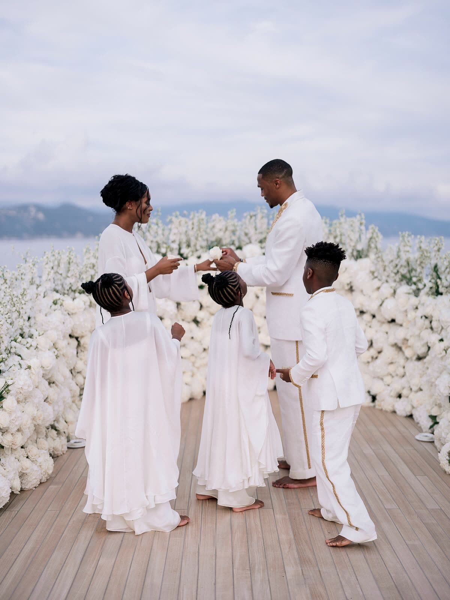
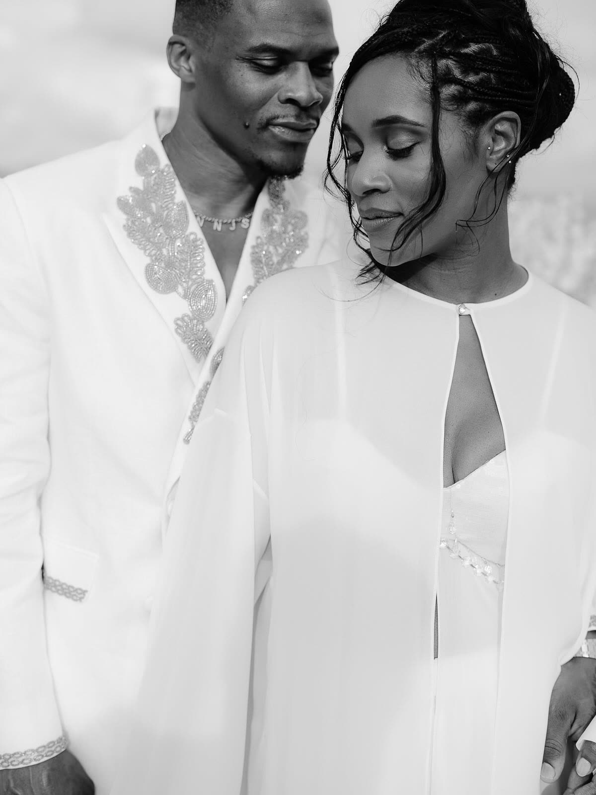
— Next wedding
— Begin Your Journey